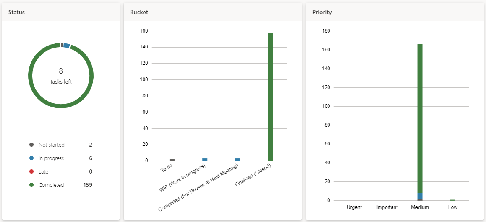

Links
- Team members’ individual websites:
- Colin Stock: Link
- Gesina Sands: Link
- Liane Wong: Link
- Michail Christofis: Link
- Samuel Saad: Link
- Canvas Group Link: Link
- Link to team A3 website: Link
- Link to team A3 GitHub Repository: Link
- Link to Teams Group: Link
Overview
The collaboration tools we have used to assist the team in completing the assessment include Microsoft Teams,
GitHub, Microsoft Office Suite, Discord, and other various software. An accurate state of group efforts was
reflected most in Microsoft Teams, as most collaboration efforts was done on this platform.
Microsoft Teams
Group Chat
The team felt it was best if the bulk of the daily messages and informal information be done in Microsoft Teams group chat,
as it was easier to converse as there are significant physical distance and time difference between team members. Due to
the nature of Microsoft Teams group chat, the team was unable to export the history of the group chat.
Channels in the ‘Hex Clan A3’ team
In the team, multiple channels were created to organise each section of the assessment for the purpose of uncomplicated access and organisation exercise.
- General - This channel was used to discuss initial team set-up decisions and for everything that falls in the ‘general’
criteria of the assessment. The ‘Kanban Board A3’ tab within it contained the team’s Kanban board. The ‘Files’
tab contained general timeframe information initially used for team organization and other files including
the team’s A2 files and the team’s logo.
- Team Profile - This channel was created to contain discussions and files related to the ‘team profile’ part of
the assessment. The ‘Files’ tab contained all the required documents that related to the team profile criteria of the assessment.
- Tools - This channel was created to contain discussions and files related to the ‘tools’ that were used in creating
this assessment. It was not very active due to this documentation could only be executed and completed towards the
end of the assignment. The ‘Files’ tab contains the tools documentation.
- Project Plan - This channel was created to allow discussions, collaborations and creation of documents relating to the
project idea. As this is the largest part of the assessment, this channel was the most active as it contains many documents
to create the Budget Hub application. The ‘Files’ tab within it contained a broken-down structure of the project plan which
the team derived from the assessment criteria.
- Skills and Jobs - This channel was created to discuss and work on various skills and jobs that will be required to work
on the Budget Hub application. In the ‘Files’ tab, created ‘job advertisements and descriptions’ were created as part
of the requirement for assessment 3.
- Group Reflection - This channel’s purpose was to organise the team’s reflections towards the end of this assessment.
In the ‘Files’ tab, a personal reflection collaboration document was created as well as a group reflection document.
- Final Documents for PDF - This channel was created to discuss and contain the final documents for the assessment 3 submission.
- GitHub Repository (Presentation) - This channel’s purpose was to discuss and contain files and documents relating
to the creation assessment 3 website and GitHub repository. It was not well used as the team preferred to upload their documents to GitHub directly.
- Project Management - This channel includes all the necessary files and discussion relating to project management of this
assessment. It also contains a Master Task List which helps the team visualise the whole progress of the assessment.
- Artefacts - This channel was created to discuss and inform the team of the progress on the Budget Hub prototype.
The ‘Files’ tab included all the necessary code and files relating to the Budget Hub application.
- 9A Presentation - This channel was created to discuss the presentation which was the requirements of Assessment 5.
The discussions within this channel enabled collaboration in the presentation collaboration regardless of the physical
distance that exist. Each team member uploaded their videos which was combined by another talented team member to make up
the whole of the presentation submission.
- Meetings - This channel was created to manage all the meetings the team had in relation to this assessment.
In the ‘Files’ tab, contains all the actions and agendas, recordings, and other documentation.
Tools within Microsoft Teams
Several tools that exist within Microsoft Teams was used to facilitate the creation of the assessment 3. The following tools are listed below:
- Polly - This was utilised to obtain a consensus on minor decisions to be made including the team’s name and logo creation.
- Tasks by Planner and To Do - A Kanban board was created to organise tasks in the team, this helped the team keep track of
their tasks and deadlines as well as helped the team visualise the number of tickets each team member has, to avoid
overloading a team member with too many tickets. This enabled the team to distribute tasks fairly and evenly.
- SharePoint - This application was used to share documents between team members to allow easier collaboration.
This is a useful innovation above emailing team member’s document.
- Microsoft Excel - This application was used to create graphs and tables for the purpose of data analysis which
was used in various parts of the assessment.
- Microsoft Word - This application was used in all the document creation relating to the written parts of the assessment.
- Chat - As mentioned above, this feature was used for general communication purposes, to update each
other on work progress as well as general wellbeing checks and banter. The reason chat was used over channel
communication was because of the nature of the team members being more active, the channel post history is
lengthy and difficult to keep track of.
Microsoft Teams Analytics
The Teams channel analytics can be found in the following path:
Hex Clan A3 -> Manage Team -> Analytics
The period for this analysis was between 16/10/2021 - 14/11/2021, which was the ‘Last 30 Days’ from the point
of making this documentation. This period falls in the assessment period which was suitable for this analysis.
1. Summary
From the screenshot, it is observed that there were 9 users. This can be explained by the team
inviting their tutors and course coordinator to the team to observe our progress and for the purpose of grading.
In fact, only 5 team members were truly active in this team. A total of 8 applications were either explored or used,
7 meetings were held, and the team shared a total of 7.83GB worth of files and documents.
2. Engagement
- The following screenshot demonstrates that 95 posts were created in all the channels which illicit a total of 240 replies.
A total of 113 mentions were made to prompt team member responses and 116 reactions were given in response
to posts or replies. This exhibits a high degree of participation by team members.
- This graph illustrates the engagement between team members in the Teams channels. It shows that team members were
consistently communicating and engaging in the entire course of this assessment.
3. Users
From this graph below, it is observed that the number of active users increased exponentially on the 19th of October 2021,
this is due to the formation of the team at the start of the assessment, as team members were from other teams in assessment 2,
a new Teams group was made for assessment 3. The number of active users were consistent throughout the assessment period.
4. Tasks
The team attempted to adopt agile methodologies to our approach in project planning. Therefore, a Kanban board was
used for this assessment as it helps the team members practise agile methodology skills to benefit them in their
future careers. The reasoning for the usage of Kanban is that software is generally developed in a long cycle, cards
or tickets which are moved are used throughout the entire process. Kanban is not iterative but incremental, as most
tasks do not have specific start and endpoints. Each project section or task have ‘WIP’ (Work in Progress) limits,
assisting team members to focus on a small part of the project at any given time (Goyal 2020).
- The board view below demonstrates the team’s effort in adopting these methodologies.
- The pie chart in ‘Chart’ view shows the status of the tasks in the Kanban board. As of 16th of November 2021,
there are 2 tasks not started, 6 in progress, 0 late tasks, and 159 completed tasks. The team showed great enthusiasm
in keeping the deadlines and completing tasks to a high standard.

- This bar chart shows the tasks completed by individual members. The graph does not represent the amount of
work each team member completed due to the task assignment system not considering the bulk and duration needed
for each task. For this reason, some tasks require less effort than others. However, the number of tasks completed
by team members for this assessment is significant. Earlier in the assessment, a student dropped out of the team
due to illness, therefore, his tasks which were completed were significantly lesser than the other team members.
The team also invited their tutors and course coordinator to the Teams group for grading purposes.
Master Task List
A master task list was also used to keep track of the progress of each section of the assessment. The table below demonstrates this:
GitHub
The team used GitHub for two purposes, to store code for the team’s website and to store the code for the Budget Hub application.
A3 GitHub Repository Pulse
Link: Click Here
The period chosen for the insights represent the entire assessment period length. From the screenshot above, it is observed
that excluding merges, 5 authors have pushed 100 commits to the main branch of the project. As all branches are currently even
with main, there are no changed files, additions, or deletions.
Contributions
The following graphs show the aggregate number of commits made by each team member.
- This graph represents the exponential number of commits made by team members as the due date of the assessment approaches.
- These graphs represent the number of commits made by each team member. As Gesina (GSMSands) oversaw the team’s GitHub
repository, she has contributed the most commits in this instance, from website creation to uploading of content, this can
be seen from the number of additions and deletions she has made for this repository. Apart from that, the team’s efforts are
reflected not only on GitHub but across all the platforms the team has used.
Budget Hub GitHub Repository
The team used GitHub to store the code and other documents related to creating the Budget Hub prototype.
Michail Christofis oversaw the backend and majority of the frontend for this project while Liane Wong and Gesina Sands
contributed to some of the superficial features of the prototype.
Link: Click Here
The graphs below show the significant contribution by the team’s talented member, Michail, who built the bulk of the Budget Hub application.
Discord
The team was formed in Discord through mutual contacts. However, the team found it difficult to navigate communication between
two platforms so ultimately, the group chats were moved to Microsoft Teams. However, the team still uses Discord to share memes or anything else informal.
Other Software, Applications, and Tools
- Microsoft Office Suite
- Microsoft Word
- Microsoft PowerPoint
- Microsoft Excel
- Microsoft Publisher
- Integrated Development Environment (IDE)
- Atom
- Visual Studio (VS) Code
- Notepad ++
- Adobe Creative Cloud Suite of Software
- Adobe Photoshop
- Adobe Acrobat
- Adobe Reader
- Adobe Illustrator
- Version Control
- GitHub Desktop
- Git Bash
- Referencing and Essay Writing
- MyBib
- RMIT Easy Cite
- Thesaurus
- Other Applications
- Snip & Sketch
- Microsoft Edge
- Google Chrome
- Brave
- Grammarly
- Canva
- Miro
Reference List
- Goyal, K 2020, Agile Methodology Steps & Phases: Complete Explanation [2020], upGrad blog, viewed 16 November 2021, .